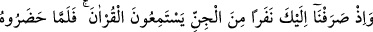
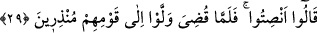

kelimesi haldir. Takdir şudur: “Tanrı edindikleri şeyler, kendilerine yardım etselerdi”
ve onları azaptan kurtarsalardı “ya!” Ki o müşrikler onları ilâh edinip kendilerini
Allah’a yaklaştırıcı kabul etmişlerdi. Bu ifâdede müşriklerle alay edilmektedir.
“Hayır, (tanrıları), onlardan kaybolup gittiler.” Bu ifâdede de yine onlarla başka bir
alay vardır.
“İşte onların yalanları ve uydurmaları budur.” Bu ifâde “ kelimesine mâtûftur.
Yâni Allah’a yapmış oldukları iftiranın ve uydurmalarının sonucu budur. Kim senden
yüz çevirirse, başka bir kimseden yüz bulamaz.
Âyette şuna işâret edilmektedir: Allah ile kul arasında sebep ve vesileler iki çeşittir:
Bunlardan biri, Allah Teâlâ’nın kulun tevessülüne izin verdiği peygamberler, veliler ve
onların getirmiş oldukları vahiy ve ilhamdır. Bunlar hidâyet sebepleridir. Allah Teâlâ
şöyle buyuruyor: “Ey inananlar Allah’tan korkun O’na (yaklaşmaya) yol arayın”
(el-Maide, 5/35). “Ey inanlar Allah’tan korkun ve doğrularla beraber olun” (et-
Tevbe, 9/119).
İkincisi, Allah Teâlâ’nın izin vermediği putlar vb. şeylere tapmadır. Bu ise nefs ü
hevâ sebepleridir. Âyetler bunu beyân etmektedir. Sonra şu da bilinmelidir ki, Allah
Teâlâ sebepler oluştuğunda işi yaratıp yapmaktadır. Yoksa Allah Teâlâ sebeplerle iş
yapmaz. Bu şekilde kul tesir ve etkinin Allah’tan olduğunu bilsin, sebeplerle değil de
Allah ile ünsiyet kursun.
Hak Teâlâ Hz. Mûsâ (a.s)’a buyurdu ki: Ey Mûsâ kuş gibi ol. Çünkü o yemini ağaç
üstünde yer, temiz su kullanır (içer). Akşam olduğunda bir kovuğu mesken tutar, benimle
ünsiyet kurar ve halktan uzak durur. Ey Mûsâ! Kim benden başkasına ümid bağlarsa,
bağlandığı her şeyden ümidini keserim. Kim benden başkasına itimâd eder, dayanırsa,
dayandığı şeyi kırarım. Benden başkasıyla ünsiyet kuranın yabancılığını (vahşetini)
uzatırım. Benden başkasıyla dost olanı da yalnız bırakır, ondan yüz çeviririm.
Âyette yine bir uyarı ve tehdid vardır ki kul Allah’tan gafil olmamalı, Allah’tan
başkasına güvenmemeli, bilakis sonucu düşünüp dâveti kabul etmelidir.
Hak Teâlâ İsrâiloğullarına şöyle buyurdu; size âhireti özendirdik, rağbet etmediniz.
Size dünyada zühd emrettik; zâhid olmadınız. Sizi ateşle korkuttuk, korku kalplerinize
girmedi. Sizi cennete teşvik ettik, heves etmediniz. Size feryâd ve figan verdik,
ağlamadınız. Artık sizden ölmüş olanlara müjdeler olsun, çünkü Hak Teâlâ kınına
koymayacağı bir kılıç kuşanmıştır ve burası cehennem yurdudur.
29. Hani cinlerden bir gurubu, Kur’ân’ı dinlemeleri için sana yöneltmiştik.
Kur’ân’ı dinlemeye hazır olunca (birbirlerine) «Susun» demişler, Kur’ân’ın